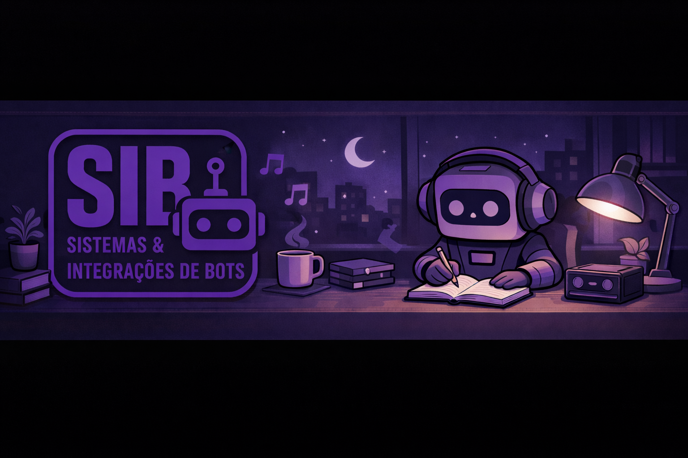
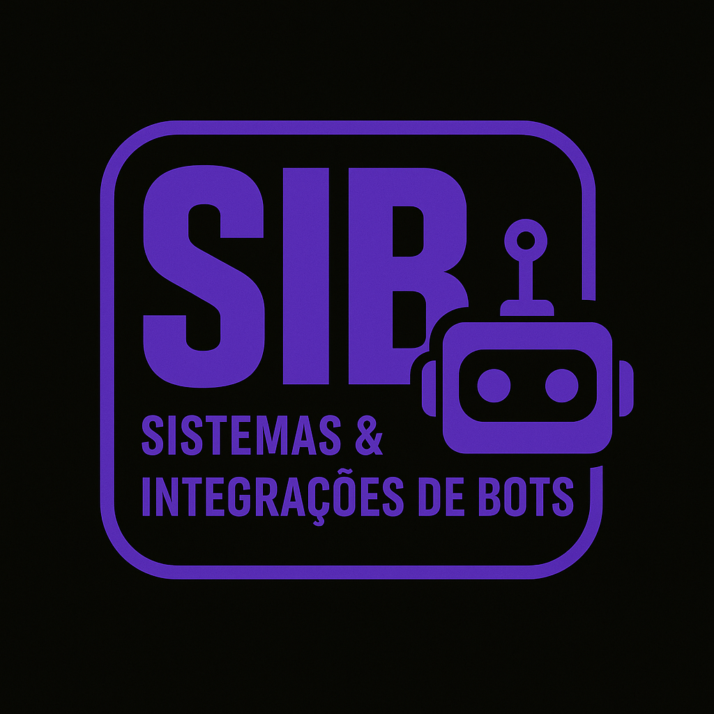

SIB • Sistemas & Integrações de Bots
Camada de organização e automações para escalar recursos e manter a comunidade bem conectada.
Projetos criados pela comunidade para fortalecer aprendizado, organização e experiências dentro do servidor.

Camada de organização e automações para escalar recursos e manter a comunidade bem conectada.

Estrutura para facilitar anúncios, organização por squads e ações rápidas da staff.
Melhorias na experiência dos membros, expansão da loja e fortalecimento dos canais de socialização.
Novos recursos de bot para eventos, ranking de participação e painéis de comunidade em tempo real.
Central GGK com ferramentas de conteúdo, integração de merch e dashboard completo dos projetos.